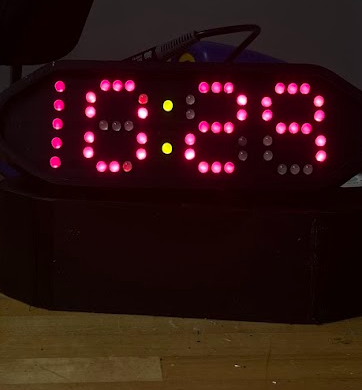
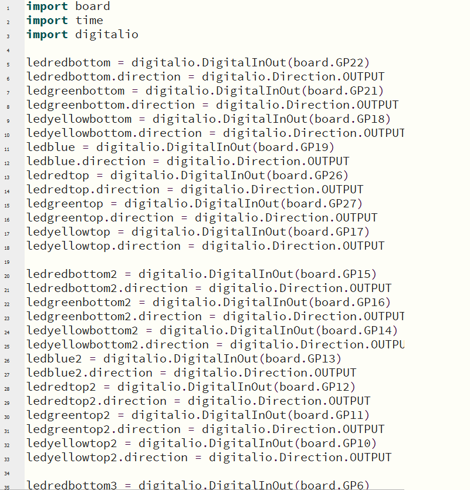

LED Clock

Overview
I have always had a fascination with microcontrollers and computers in general. My goal for this project was to expand on my limited working understanding of electronics and circuits to build an entire working clock. Through this process, I mastered many of the fundamental elements of electronic designs. From completing this project, I now have a working clock I use in my bedroom and gained many invaluable technical skills.
Skills
-
.png)
Circuits
-
Python
-
.png)
CAM
Roles
- Designer
- Prototyper
- Test Engineer
Tools
- Solidworks
- Soldering
- 3D Printing
- Circuit Design
- Microprocessors
Models Over the Years
This project began with a question. Can I make a clock with only supplies that I can get from my school’s design lab? I achieved the former by first asking myself a question, what is readily available to me and to most people for very cheap? The answer was LEDs. So from the beginning I wanted to incorporate LEDs to create the lines of a 7 segment display, which to my knowledge had never been done before on any commercial scale. I started with 7 LEDs and wrote conditional statements in a while loop with a 1 second delay between iterations. The LEDs produced the correct pattern and I used that blueprint to eventually build out a whole working display on a breadboard. Improvements came after, including using a dictionary to hold an LED matrix so that I would not have to use if statements anymore. Additonally, I built and printed a physical clock to put together. All said and done, my final product does what I want it to do and I hope to build a full instruction guide to publish on my GrabCad as a free resource for aspiring designers.

Learning
I learned how to solder, refined my knowledge of python and microcontrollers, and how to design a circuit to output information in a with a non-traditional display. Furthermore, I learned the design process and how small successes build into complete projects. Lastly, I learned how to teach myself and solve novel problems.